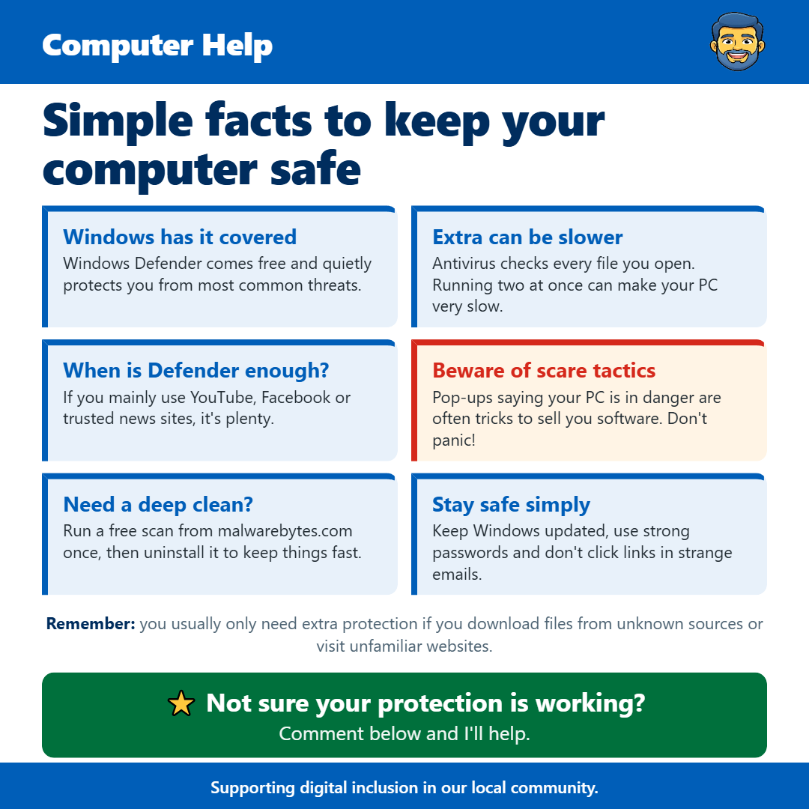

Simple facts to keep your computer safe

Hi everyone, I wanted to share a few tips about keeping your computer safe, because a lot of people end up paying for antivirus they don't actually need.
If you have a Windows computer, it already comes with free protection called Windows Defender. It runs quietly in the background and protects you from most everyday threats. You can check it's switched on by typing "Windows Security" into the search bar at the bottom of your screen. If everything shows a green tick, you're protected.
Adding another antivirus program on top usually doesn't make you any safer, and it can make your computer much slower because both programs check every file you open. If a paid antivirus came already installed on your laptop and you don't remember signing up for it, keep an eye out for renewal charges.
Be careful of pop-ups that suddenly say your computer is infected or locked, especially ones with flashing warnings, loud noises or a phone number to call. These are scams designed to frighten you into paying or letting someone take control of your computer. Don't call the number. Just close your web browser, or restart the computer if it won't close.
If you think something isn't right, you can run a free one-off scan with Malwarebytes from malwarebytes.com, then uninstall it afterwards so it doesn't slow things down.
Most of the work is done by a few simple habits: let Windows install its updates, use different passwords for important accounts, and don't click links in emails or texts you weren't expecting.
If you're not sure whether your computer is protected or have any questions, just comment below and I'll do my best to help.
I hope this helps, and feel free to pass it on to anyone who might find it useful.